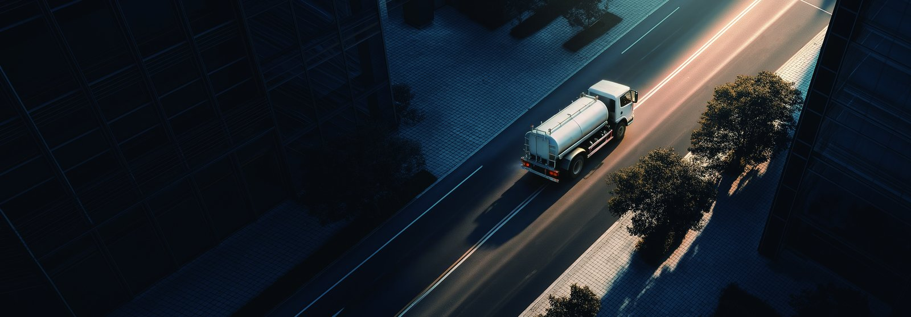

Islamabad and its twin city Rawalpindi face a year-round street-cleaning mandate that intensifies during the Monsoon, when dust and debris surge and the Capital Development Authority (CDA) ramps up washing and beautification programmes. For municipal fleets, a dedicated electric truck for high-pressure washing cuts both operating cost and the diesel fumes drifting through residential sectors. The KT7A electric washing truck is engineered for exactly this public-service duty. Our Pakistan electric truck market guide covers the national context.
The CDA is responsible for Islamabad’s avenues, sectors and green belts, and its cleaning programme runs daily. During the Monsoon (July–September), dust, mud and fallen foliage accumulate rapidly, and the authority increases washing frequency to keep the capital presentable and to control respiratory dust load. Rawalpindi, governed separately, runs parallel municipal cleaning. Both need reliable, low-emission vehicles that can work early mornings without adding noise and exhaust to already congested sectors, and both face tight public budgets that reward the lowest lifetime cost.
A washing truck spends its life in low-speed, stop-start urban duty — the ideal electric profile. The KT7A pairs a high-pressure washing system with an electric powertrain, so the pump and the drivetrain draw from the same battery. There is no idling diesel, no exhaust at the curb, and far less noise during pre-dawn cleaning runs. For a municipality, that means cleaner air for the crews and the citizens they serve.
The KT7A is a dedicated electric washing truck with a CATL LFP pack of 220–262 kWh and a high-pressure washing system rated for street, curb and foliage cleaning. Its LvKong permanent-magnet motor delivers the torque for hill-sector climbs around Islamabad, and the pack supports a full shift of intermittent pumping and driving.
| Specification | KT7A value |
|---|---|
| Battery | CATL LFP 220–262 kWh |
| Washing system | High-pressure, multi-nozzle |
| Drive motor | LvKong PMSM 180–260 kW |
| Water tank | Large-capacity integrated tank |
| DC charge | 20–80% in 35–60 min |
| Battery warranty | 8 years / 4,500 cycles to 70% SOH |
| FOB China price | US$90,000–115,000 |
Pakistani diesel for municipal fleets runs near US$0.85–0.95/litre; grid electricity (often subsidised for public bodies) near US$0.09–0.12/kWh. The KT7A consumes about 1.1 kWh/km plus pumping energy; a diesel washing truck burns about 0.30 L/km plus a separate pump engine.
| Cost element | Diesel washing truck | KT7A EV truck |
|---|---|---|
| Energy / km | ~US$0.38 (drive + pump) | ~US$0.15 |
| Maintenance / km | US$0.10 | US$0.04 |
| Total operating / km | US$0.48 | US$0.19 |
| Annual saving at 40,000 km | — | US$11,600 |
Against the US$90,000–115,000 FOB price, the saving recovers the EV premium over a diesel landed unit in roughly five to six years — a sound horizon for a public-asset depreciation schedule, and one improved by lower diesel exposure and the health dividend of zero curb-side emissions.
The CDA and Rawalpindi municipal depots can install 120–180 kW DC chargers on existing grid connections, charging the KT7A overnight so each truck starts its shift full. With 20–80% charge in 35–60 minutes, a second shift during Monsoon surges is covered by a mid-day top-up. Battery swap at 5–6 minutes is available for continuous operations. For public tenders, the KT7A’s lower lifetime cost and zero-emission operation strengthen a bid against diesel alternatives, and we provide the technical dossier municipalities need for capital-budget approval.
The Monsoon turns Islamabad’s unsealed margins and construction sites into dust sources. A washing fleet that runs quietly and without exhaust can increase cleaning frequency without raising the city’s own pollution — a public-health win that justifies the electrification on non-financial grounds as well. For a capital city branding itself clean and green, the KT7A is a visible signal of modern municipal management, seen daily by residents and visiting officials along the main avenues.
A municipal washing fleet is a public asset, and its support must be demonstrable to the officials who approve the budget. The KT7A’s high-voltage system is sealed and self-diagnosing, while the washer pump, nozzles, suspension and brakes use conventional parts serviced by local workshops. Our first Pakistan fleets receive a managed spare-parts consignment and operator training covering safe HV isolation, daily pre-trip checks, and the simple battery care that protects the 8-year / 4,500-cycle warranty. The CDA and Rawalpindi crews quickly adapt to the quiet, fume-free operation, and the absence of an idling diesel at the curb is immediately visible to the public the trucks serve. For tender evaluation, we supply the technical dossier — specifications, warranty terms, charging design and local support — that procurement committees require, so the electric option is assessed on equal footing with diesel and can win on lifetime cost and public-health merit.
Islamabad is a city of sectors built into rising ground, and the KT7A’s LvKong motor delivers the low-speed torque needed for the graded avenues without the strain a small diesel washer shows on the climb to the higher sectors. The washing circuit itself depends on water logistics as much as power: we plan the route so the integrated tank is refilled at municipal hydrants or the depot rather than hauling excess weight, which preserves range and reduces wear. During the Monsoon the tank turns over faster as mud and debris accumulate, and the depot charger keeps the 220–262 kWh pack full for the longer combined washing-and-grading days. Rawalpindi’s flatter, denser layout favours a tighter circuit with more frequent short refills, and the same truck configuration serves both cities with only the route plan changing. For the CDA, that flexibility — one electric platform covering hill sectors and flat town alike — is what makes a single fleet order cover the whole capital region cleanly, and it is why the KT7A’s lifetime cost and health dividend win tenders on merit.
Shaanxi Fenghan Trading supplies the KT7A electric washing truck to Pakistani municipal and contractor buyers with local-language manuals, L/C or T/T terms, and support for depot charging design. Our Pakistan EV truck market guide details import and tender pathways. For Islamabad and Rawalpindi, the KT7A is the clean, quiet future of street cleaning.
Beyond the operating saving, the KT7A changes how a city is experienced. A washing truck that makes no diesel noise and emits nothing at the curb is a small but daily reminder of competent municipal management, seen by commuters along Islamabad’s main avenues and by residents of Rawalpindi’s dense neighbourhoods alike. For public officials accountable for both the budget and the air their constituents breathe, that combination is difficult to argue against, and it is why electrified street cleaning is spreading from pilot blocks to city-wide programmes across the twin cities.
The CDA has already shown that clean streets are a visible measure of governance, and an electric washing fleet lets that signal run every day without the familiar haze and rumble of a diesel unit idling at the curb outside a school or clinic.
Ready to electrify your fleet? Contact Shaanxi Fenghan Trading — authorized Dongfeng EV truck exporter. WhatsApp: +86 153 1943 1311 | Email: sales@fenghan-trade.com | dongfengevtrucks.com
🌐 Our Network: Fenghan Trade (SAGMOTO/SHACMAN Truck Export) · SAGMOTO heavy duty diesel trucks